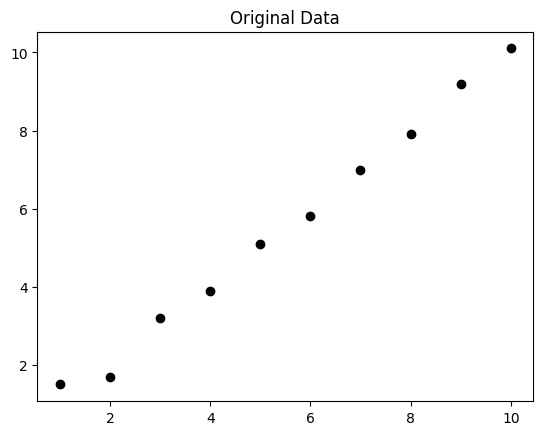
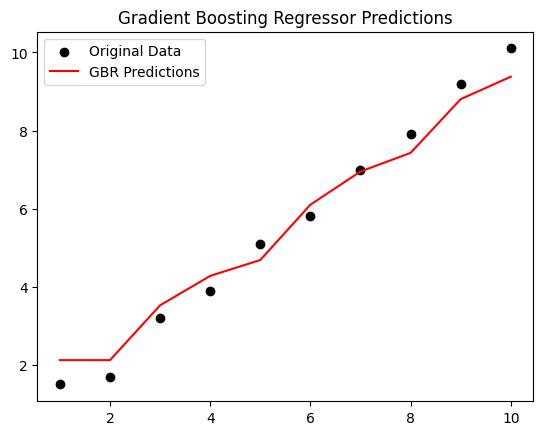

Gradient Boosting Regressor#
Gradient Boosting Regressor (GBR) is an ensemble learning method used for regression tasks. It builds a strong predictive model by sequentially combining weak learners (typically decision trees) in a way that each new learner corrects the errors of the previous ensemble.
Here’s a detailed explanation:
1. Core Idea#
Start with a simple model (like the mean of targets).
Fit a sequence of weak learners to the residuals (errors) of the current model.
Each new learner tries to predict the negative gradient of the loss function (hence “gradient boosting”).
Combine the learners using a learning rate to form the final model.
2. Mathematical Formulation#
Step 1: Initialize model#
For regression, typically using Mean Squared Error (MSE) as loss:
Solution: \(F_0(x) = \frac{1}{n}\sum_{i=1}^n y_i\) (mean of targets)
Step 2: Compute pseudo-residuals#
For iteration \(m = 1,2,...,M\):
For MSE: \(r_{im} = y_i - F_{m-1}(x_i)\)
Residual = error of the current model.
Step 3: Fit a weak learner#
Train a weak learner \(h_m(x)\) (usually a decision tree) to predict \(r_{im}\).
Step 4: Line search for optimal multiplier#
Compute best step size \(\gamma_m\):
For MSE: \(\gamma_m\) is the mean of the residuals in each leaf.
Step 5: Update model#
\(\nu\) = learning rate (shrinkage factor, usually 0.01–0.2)
Step 6: Final prediction#
After \(M\) iterations:
3. Hyperparameters#
n_estimators→ number of trees \(M\)learning_rate→ shrinkage factor \(\nu\)max_depth→ depth of each treemin_samples_split→ minimum samples per splitsubsample→ fraction of data for stochastic gradient boosting
4. Intuition#
Start with a simple guess (mean).
Look at errors → fit a tree to correct them.
Add corrections gradually (learning rate) → build strong model.
Each tree focuses more on the “hard” parts that previous trees got wrong.
5. Advantages#
Handles non-linear relationships well.
Can model complex interactions.
Reduces bias through sequential corrections.
6. Limitations#
Prone to overfitting if too many trees or too deep.
Slower than simpler models (like linear regression).
Sensitive to outliers if not handled properly.
# Import libraries
import numpy as np
import pandas as pd
from sklearn.tree import DecisionTreeRegressor
import matplotlib.pyplot as plt
# Step 1: Create a small dataset
X = np.array([1, 2, 3, 4, 5, 6, 7, 8, 9, 10]).reshape(-1,1)
y = np.array([1.5, 1.7, 3.2, 3.9, 5.1, 5.8, 7.0, 7.9, 9.2, 10.1])
plt.scatter(X, y, color='black')
plt.title("Original Data")
plt.show()
# Step 2: Initialize model with mean
F0 = np.mean(y)
print("Initial prediction F0:", F0)
# Step 3: Parameters
n_estimators = 3 # Number of weak learners
learning_rate = 0.5 # Shrinkage
residuals_list = [] # To store residuals
Fm = np.full_like(y, F0, dtype=float) # Current model predictions
# Step 4: Gradient Boosting iterations
for m in range(n_estimators):
# Compute residuals
residuals = y - Fm
residuals_list.append(residuals)
print(f"\nIteration {m+1}")
print("Residuals:", residuals)
# Fit a weak learner (Decision Tree of depth=2)
tree = DecisionTreeRegressor(max_depth=2)
tree.fit(X, residuals)
# Predict residuals
pred = tree.predict(X)
# Update model
Fm += learning_rate * pred
print("Updated predictions Fm:", Fm)
# Step 5: Plot predictions
plt.scatter(X, y, color='black', label='Original Data')
plt.plot(X, Fm, color='red', label='GBR Predictions')
plt.title("Gradient Boosting Regressor Predictions")
plt.legend()
plt.show()

Initial prediction F0: 5.54
Iteration 1
Residuals: [-4.04 -3.84 -2.34 -1.64 -0.44 0.26 1.46 2.36 3.66 4.56]
Updated predictions Fm: [3.57 3.57 4.80333333 4.80333333 4.80333333 6.22
6.22 6.22 7.595 7.595 ]
Iteration 2
Residuals: [-2.07 -1.87 -1.60333333 -0.90333333 0.29666667 -0.42
0.78 1.68 1.605 2.505 ]
Updated predictions Fm: [2.64611111 2.64611111 3.87944444 4.63222222 4.63222222 6.04888889
6.8975 6.8975 8.2725 8.8475 ]
Iteration 3
Residuals: [-1.14611111 -0.94611111 -0.67944444 -0.73222222 0.46777778 -0.24888889
0.1025 1.0025 0.9275 1.2525 ]
Updated predictions Fm: [2.12305556 2.12305556 3.52652778 4.27930556 4.68578704 6.1024537
6.95106481 7.42791667 8.80291667 9.37791667]
